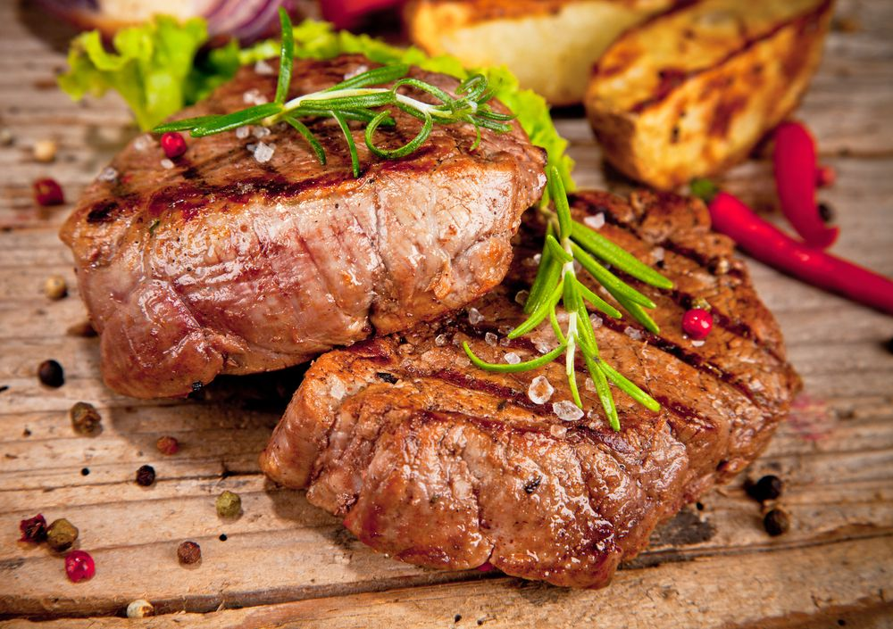
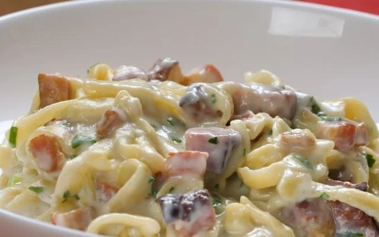
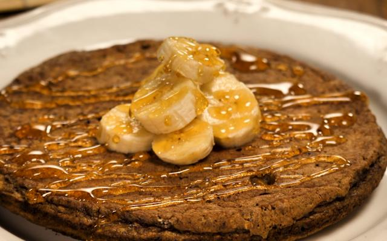

-
Receitas de um Programador
-
Filé mignon
Os pratos se tornam saborosíssimos quando possuem filé mignon como um de seus componentes. Suculento e delicioso, ela é considerada uma "carne de primeira", cheia de maciez e sabor que vale a pena investir em receitas que a utilizem - mas vale a pena lembrar que as "carnes de segunda" também fazem receitas de dar água na boca! A textura e o sabor são capazes de encantar o paladar logo na primeira garfada. Podendo ser servida tanto pura quanto acompanhamento, essa carne se torna ainda mais fantástica com a adição de diferentes temperos e molhos que ressaltam seu sabor, deixando-a irresistível.
Ingredientes
- 1 peça de filet mignon inteira sem o cordão
- Mostarda
- Molho inglês
- 2 dentes de alho espremido
-
Macarrão com bacon e molho branco
Um clássico que nunca sai de moda, o macarrão com bacon e molho branco é uma explosão de sabor em cada garfada! A combinação perfeita entre a maciez do macarrão, a crocância do bacon e a cremosidade do molho branco resulta em um prato reconfortante e delicioso. Essa receita, aparentemente simples, revela uma complexidade de sabores que conquista paladares de todas as idades. A cada garfada, uma nova experiência, uma nova explosão de sabor. Experimente e se surpreenda com essa combinação perfeita!
Ingredientes
- 1 pacote de macarrão
- 1 colher de manteiga
- 1 caldo de galinha
- 2 colheres de maisena dissolvidas em leite
- ...
-
Panqueca de banana fit
"A panqueca de banana fit é a opção perfeita para quem busca um café da manhã ou lanche saudável e delicioso. Feita com ingredientes naturais e nutritivos, essa panqueca é leve e saborosa, ideal para quem busca uma alimentação equilibrada. A combinação da banana madura com os ovos e a canela cria um sabor irresistível, que agrada a todos os paladares.
Ingredientes
- 1 colher de cacau em pó 100%
- 2 ovos
- 2 colheres de aveia
- 1 banana